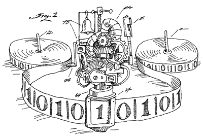

从图灵机到Emacs再到FPGA

Emacs 就是 Lisp Machine
在所有攻击Emacs的言论中，我最赞同也最具有杀伤力的一条是 Emacs违背了UNIX的设 计哲学 。这当然一针见血,Emacs做了太多的事情,与采用搭积木哲学的UNIX 格格不入。 但事实上，“违背了UNIX的哲学”恰好是Emacs的价值所在，因为它的血统本身就在UNIX 之外，它传承自MIT实验室的Lisp Machine。用过LISP机器的人自然不习惯UNIX这 种看上去“低级”的操作系统。结果是，用过LISP Machine的用户除了抱怨UNIX外，只 能寻求在UNIX上构建一个新的层，来弥补UNIX的不足。这事情的一个结果就是造就了 Emacs这个怪兽，到最后几乎所有能在UNIX里做的事情，都能在Emacs里完成。这样， 除了操作系统内核外，Emacs 完全取代了 UNIX 环境。Emacs 功能强大到大家都同意 Emacs 是个万能软件，而 vi 用户则开玩笑说 Emacs 是个缺少一个好编辑器的操作系统。 大家都知道，Emacs 的作者正是从 MIT 出来的 Richard Stallman。
Lisp Machine是基于Lisp或者说是基于Lambda Calculus。上世纪三十年代，A.Church为
了精确定义可计算性,提出了Lambda Calculus的概念。随后Alan Turing提出了图灵机
(Turing machine)，并以一篇 可计算性与lambda可定义性 构建了Church–Turing
thesis，奠定了现代计算机理论的基石。
Turing和Church从不同的角度描述了 什么是计算 这个问题。而这两个角度在后世的
实践中就变成了Turing Machine和Lisp Machine,从数学和计算机科学的角度上来讲，它
们是等效的。但在哲学理念上，我们可以通过Vi和Emacs的使用哲学一窥其妙。
Lisp Machine 和 Turing Machine
Vi最让人印象深刻的并非是它繁杂的快捷键，而是它是一个有状态的编辑器。最基本的， Vi有三种模式——normal, insert 和 command-line。用户通过关键键（「Escape」和 「:」)进行状态转换。在normal-mode下，用户可以通过一系列命令操作文档，这些命令 的组织状态类似于运算逆波兰表示法(Reverse Polish notation form),这是一种典型 的基于状态机的解析方式——在对命令的读取解析过程种，每碰到一个数值，就把它推进堆 栈；每遇到一个运算符，就用它对临近数值求值，并且推回堆栈中——这是一种典型的图灵 机的工作方式—— 基于指令和状态寄存器 ，它读取用户输入的方式就仿佛是在读取一条打满 了空洞的输入卡带。
我们再来看看Emacs的行为方式。对于Emacs来说，你的任何输入所能导致的结果只有一个,那 就是执行该输入所映射的相关函数，而所有输出的结果都来自于函数的副作用。比如说你 输入的时候执行的是insert函数,它的副作用是在屏幕上显示输入；打开文件的时候执行的 是load-file函数,它的副作用是将文件读取到当前buffer;而 更为神奇的是，这些函数 是可推导的 。这意味着，它的命令并不同Vi那样被抽象成若干状态和指令集，而是类似 (load-file (insert "test"))这样基于function list/chain的处理方式。你或许会说这 样的处理方式同比vi并没有本质区别，因为lisp machine解构开来也就是list processing machine，和Turing那个吃纸带的家伙有什么分别呢？
这里的区别主要在于，在vi里你可以用指令和状态来描述问题,而Emacs用函数和函数的副 作用来描述问题,而这里的函数本身就是描述。可推导的函数和功能能创造更多的分析和 解决问题的空间，而Turing Machine那种对指令集和状态的高度依赖却往往让人无法真正 的从数学和逻辑的角度来理解问题——更多的是Just Works而非How it Works——但是为什么 我们需要它们变得更接近于数学和逻辑呢？
FP, ELisp 和 Haskell
这几乎是一桩不亚于vi/Emacs的公案，公案的描述是 我们为什么需要FP（函数式编程语 言） 特别是纯粹的函数式编程语言。这里要特别提到的是，对于严肃的FP拥护者，lisp 并不算是严格的函数式编程语言，因为Lisp还存在状态（从Elisp编码时铺天盖地的Set就 可看出这一点）。但即便如此，FP依旧能比C/java这类指令式语言更能描述好问题的本质， 逻辑可推演带来的好处是逻辑可肢解，你不再需要依赖严格的时序的纸带那样的奇怪东西 就能完成问题的计算——计算机未必要设计成纸带阅读器的模样，无论是在并发需求上，还 是工业优化上都有充分的理由。
我们知道现代计算机其实就是通用图灵机(Universal Turing Machine)，它被创造出来用 以接受任何「图灵机描述」，它的本质是一台处理打孔纸带（或者二进制电平流）的工具。 基于这样的理念，传统的CPU被设计成了一个拥有诸多寄存器和算术逻辑单元的「纸带」 读取器，你可以利用纸带向寄存器储存状态或数值以完成一个图灵机描述。数十年来，这 个架构随着摩尔定律的验证发展到了极致。但在近几年，我们却发现摩尔定律变得和以前 不一样了——人们发现集成集成电路的复杂度是不可能无限度的增加的，单个芯片上的电子 元件数量必定会在某个时刻逼近一个极限。于是生产商们对摩尔定律做了一些小修改，那 就是多核——CPU的核心数量将会每隔18个月就翻一番。
那么基于纸带模型的图灵机是如何处理多核心问题的呢？在传统单核心CPU架构上，事情 是这样的。有若干条描述图灵机的纸带，一个纸带读取装置(处理器），由一个条被称作 「scheduler」的纸带负责调度哪一条纸带应该被读取，读取多长时间，哪一条纸带应该 先放到一边，是采取FIFO的方式还是RR的方式来创建规则。你可以想像一个经典的过海关 模型——有若干条长度不一的队伍，但是海关的检口只有一个，于是我们有一个调度员居中 调度：让队伍A先检五分钟，然后轮到队伍B，或者每条队伍轮着来。但一旦处理器变成了 多核，问题就出现了——当你有四个或者更多处理器的时候，你当然可以让处理器和纸带依 旧像传统模型那样进行碎片化的调度，但它显然不够聪明，更聪明的方式是让这些处理器 真正的并行开工——但是海关的调度员开始郁闷了，我们有四个检口，若干队伍，包括外国 人队伍，本地居民队伍，持旅行签证的队伍，持长期逗留签证的队伍，应该如何调度才能 达到最高效率呢？而更甚者，很可能队伍A的某個成員和队伍B中的某個成員是情侶关系， 他们持有本地戶籍的小孩又在队伍C中。——这便是图灵纸带模型的局限性，也是當前指令 式编程死锁、堆栈跟踪、低级处理器缓存命中率低等问题的根源。
但函数式编程（FP），或者Lambda Calculus却不存在这样的问题。因为函数式编程不存 在状态和执行顺序——由于没有状态，因而不存在破坏性赋值；由于确定的函数输入和输出 映射，因而能够更自由的完成调度。事实上FP，如Elang，Haskell，在高并发处理的环境 下业已举足轻重。
LISP Machine on FPGA
而在另一个方面，硬件厂商在架构设计时，已经越来越倾向于ARM + FPGA的架构。FPGA即 是现场可编程门阵列(Field-programmable Gate Array)——一种可基于硬件的可编程逻辑 模块。FPGA的魅力在于，它的逻辑实现是真正的直接基于硬件的，而不是类似CPU那样是 「模拟」的，这意味着我们甚至可以利用FPGA直接对特定的逻辑模块或函数进行「真硬件 加速」。IBM认为：对于未来的计算机架构来说，FPGA将成为服务器的虚拟资源：一种受 保护的虚拟架构，在这种架构上，系统软件可以动态建立可共享的加速器。这类加速器就 是就是大量可动态重新配置的逻辑门。而在考虑对逻辑器件进行编程的时候，首先被淘汰 的却是在传统PC上性能优异大行其道的C了。Tabular的CEO兼CTO认为在对FPGA编程是，虽 然RTL用起来很差，但C显然更糟糕，虽然那是非常底层的工作，而或许基于 lambda-calculus的Haskell会好些，它毕竟直接面向逻辑和数学的。
其实从某种角度上来讲，FPGA架构更适合或者就是LISP Machine。只不过传统的LISP Machine实际上是基于ASIC，而FPGA无疑会让它变得更加灵活——这一切皆由于Lisp可以推 导至逻辑层的特性——就仿佛是Emacs底下的那一层薄薄的C。
我们从晶体管时代一路走来，从集成电路到量子和DNA计算机。百花齐放，各种思想和哲 学层出不穷，或者Unix和Lisp Machine都将变成过眼云烟，但唯有逻辑和数学永生。